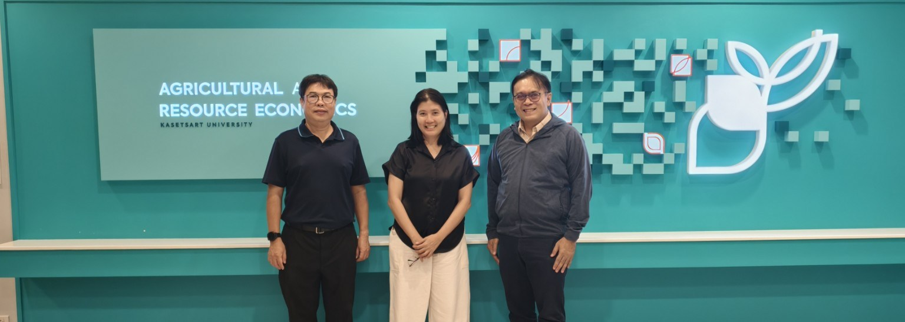

ถ้าไม่เริ่ม ความร่วมมือระหว่าง AI กับเศรษฐศาสตร์ก็คงไม่ไปไหน
{kind=link}

บทความสั้นนี้มีน้ำหนักเชิงความคิดมากกว่าความยาว เพราะผู้เขียนยอมรับตรง ๆ ว่า การหารือความเป็นไปได้ของความร่วมมือระหว่างศาสตร์ด้าน AI กับเศรษฐศาสตร์ ยังไม่รู้ว่าจะไปจบตรงไหน แต่เลือกจะเริ่มต้นก่อน
ประโยคที่ว่า ถ้าไม่เริ่ม ก็คงไม่ไปไหน ทำให้โพสต์นี้กลายเป็นจุดตั้งต้นเชิงสัญลักษณ์ของเส้นทางความร่วมมือ ที่ต่อมาจะพัฒนาไปสู่การคุยเชิงลึกเรื่องหลักสูตร Data Analytics, AI และ AIEP สำหรับเศรษฐศาสตร์
สิ่งสำคัญของโพสต์นี้คือการยืนยันว่า การเปลี่ยนแปลงระหว่างสาขาไม่ได้เริ่มจากแผนแม่บทเสมอไป แต่อาจเริ่มจากการพูดคุยที่ยังไม่เห็นปลายทางชัดเจน แต่มีความกล้าพอจะเริ่ม และพร้อมเปิดพื้นที่ให้ความเป็นไปได้ใหม่เกิดขึ้น
ความร่วมมือข้ามศาสตร์ต้องเริ่มจากการยอมรับว่ายังไม่มีคำตอบครบ
ในเชิงมหาวิทยาลัย โพสต์นี้สะท้อนท่าทีที่สำคัญมากคือ การทำงานข้ามศาสตร์ไม่จำเป็นต้องเริ่มเมื่อทุกอย่างชัดแล้ว ตรงกันข้าม หลายครั้งต้องเริ่มในภาวะที่ยังมีความไม่แน่นอน และอาศัยการสนทนาเพื่อค่อย ๆ สร้างภาพของโจทย์และโอกาสร่วมกัน
มุมนี้ทำให้โพสต์ชิ้นนี้เป็นเหมือนprelude ของเรื่อง AIEP กับเศรษฐศาสตร์ในเวลาต่อมา เพราะมันบันทึกจุดที่ความร่วมมือยังอยู่ในสถานะ possibility แต่ได้ขยับจากความคิดลอย ๆ มาเป็นการพบปะพูดคุยจริงแล้ว
การเริ่มต้นเล็ก ๆ อาจเป็นเงื่อนไขแรกของการเปลี่ยนแปลงใหญ่
สาระของโพสต์จึงไม่ใช่ผลลัพธ์ทันที แต่คือหลักคิดว่า หากไม่มีใครเริ่ม การเปลี่ยนแปลงก็ไม่มีทางเกิด แม้วันนี้จะยังไม่รู้ปลายทาง แต่การเริ่มต้นอย่างจริงจังย่อมสร้างเงื่อนไขแรก ให้เส้นทางใหม่มีโอกาสเติบโต
สำหรับระบบการศึกษา นี่เป็นบทเรียนสำคัญ: หลายเรื่องไม่อาจรอให้สมบูรณ์ค่อยเริ่มได้ เพราะตัวความร่วมมือเองต่างหากที่เป็นกระบวนการสร้างความชัดเจนไปพร้อมกัน